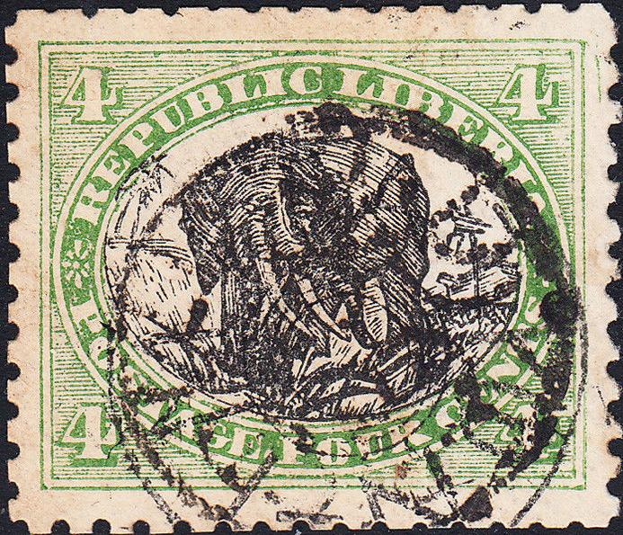
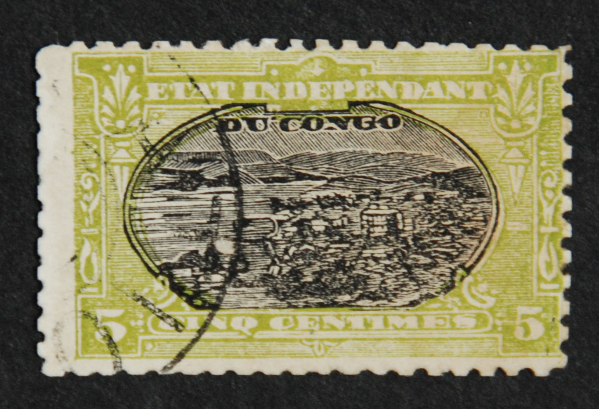

Other forgery from Wuhu probably made by Kamigata, the cancel is identical to the one shown in the Tyler book.
Note: on my website many of the
pictures can not be seen! They are of course present in the
catalogue;
contact me if you want to purchase the catalogue.
Kamigata was a stamp dealer in Tokyo (Japan). According to 'Philatelic Forgers, their Lives and Works' by V.E. Tyler, Kamigata sold forged stamps from Japan, China, Shanghai, Taiwan, Korea and many other countries. If my information is correct, the forgeries were actually made by the printer Maeda Kihei. These forgeries appeared from about 1890 to 1900.
A Kamigata forgery of the 1/2 p 1891 stamp of the British South Africa Company is described in 'Focus on Forgeries' by V.E.Tyler. Furthermore a local stamp of Wuhu (1 c bird design) is identified as a Kamigata forgery in this book. In both forgeries, the English inscriptions are badly done (misspelt words).
Other forgery from Wuhu probably made by Kamigata, the cancel is
identical to the one shown in the Tyler book.


These forgeries of Korea can be distinguished right away, this circular cancel with rings was never used in Korea! According to 'Focus on forgeries' by V.E.Tyler, these forgeries were probably created by Kamigata.


A Kamigata forgery of the 5 Mn value of Korea, with circular
cancel with "MITATION" which was cancelled once more
with some black blotches (undoubtedly to hide the
"MITATION" cancel). Also another one with a
"MITATION KAMIGATA" cancel.

Forgery with inscription 'XI. ANN' instead of 'XL. ANN'; also
note that the '3's are totally different from a genuine stamp
According to the book 'Focus on Forgeries' Kamigata made two forgeries of the 1902 jubilee issue of Korea, both forgeries have 'XI.' instead of 'XL.'


Forgeries of the first issue of China, possibly made by Kamigata.
Forgeries of the second issue of China, possibly made by Kamigata
Forgeries of China, probably made by Kamigata. All with very wide margins and badly perforated:

This forgery of the 2 c of China has inscription 'Cnn', I have
also seen it in brighter green. I've also seen this forgery with
a circular 'IMITATION' cancel.

Possible Kamigata forgery of Taiwan.


Kamigata forgery of Shanghai with "IMITATION" cancel.
The last stamp appears to have a ".MITATION MO? KAMIGTAYA
POSTAGE STAMP" cancel (I've seen the same cancel on a
forgery of Hawaii). Next to it a forgery of China with the same
cancel.


Other Kamigata forgeries of Shanghai.


Possibly Kamigata forgeries of Japan.

Kamigata forgeries of Japan.

Kamigata forgery of Liberia.


Kamigata forgeries of Ethiopia



Belgian Congo
Stamp forgeries - Timbres-poste, faux - Briefmarken Fälschungen


{kind=link}
{kind=link}
{kind=link}